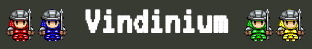
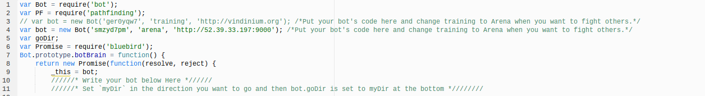
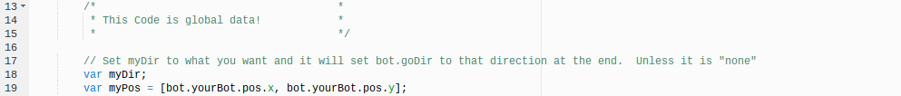
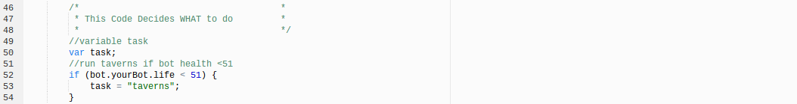
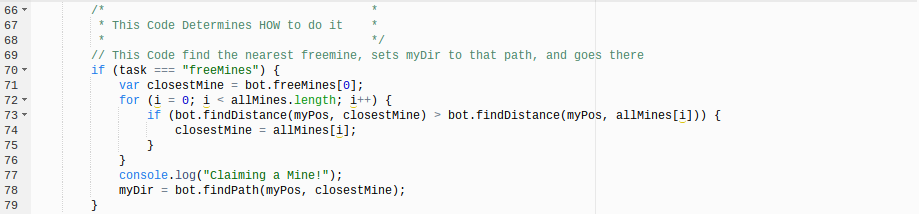

| Overall |
|---|
|

Vindinium is a multiplayer artificial intelligence game in which players create a bot and code its instructions in Javascript. Each round, there’s a random setting comprised of foliage and water, mines, and taverns. Players begin with 100 health points and zero gold. Every player’s goal is to end the game with the most amount of gold, which is gotten by collecting mines, which give the owner one piece of gold per turn. To collect mines, players have to defeat a goblin, which protects it. They can also gain mines from killing other players, which gives them all of the deceased’s mines. When a player is killed, they keep all their gold, but have no mines. Taverns give players more health, at 50 health points for two coins. |
| Part 1 |
|---|
|

This section was given to us already coded, but I'll still describe lines 3 and 4, which I did use. These are basically the same thing, but one is commented out. The random string first in the parentheses is my bot's code, which means that you could take it and use my bot. The training/arena part determines whether or not my bot pretty much just tests for if it crashes (training) or runs against other bots (arena). Lastly, the http://vindinium.org/http://52.39.33.197:9000 determines if my bot runs against the main Vindinium server (vindinium.org) or the private server for this class (52.39.33.197:9000). |
| Part 2- Global Data |
|---|
|

This shows the introduction of the Global Data section and writes myDir. There is a variable made called myPos which holds the x and y coordinates of my bot.
|
| Part 3- WHAT to do |
|---|
|

This code is the title of the what to do section and includes the taverns if statement. It sets a variable called task, which holds all of the following statements (taverns, attack, and freeMines). It then has an if statement, the condition of which says that if my bot's health is < 51 points, it should run the code block, which tells the how to do it part that that's what should be done. I used the bot.yourBot.life id, which says the health.
|
| Part 4- HOW to do it |
|---|
|

This picture begins with the title of the How-to-do-it section. It also includes the freeMines task in an if statement. It says that if freeMines is run, then find the closest free mine and taken mine. It then compares the two and if the nearest taken mine is closer than the nearest free mine, it changes that to closestMine. Then it sends the bot to that position and makes the console (the description when you can't see the tv of the game) say, "Claiming a Mine!"
|
| What I Learned |
|---|
|
This was a very hard project, especially the first couple days we were doing it. I had absolutely no idea what I was doing and was super confused, even when people explained how to do things. I first started understanding how it worked when Mr. Hesby did the attack function (or some other function, I don't remember) on the board and people could follow along and copy what he was writing. Even though this could be considered cheating and might not help some people, it was very informational for me because I began to understand how the three sections work together and how most of the sections (going to taverns, mines, or attacking people) aren't that different from each other.
|
var Bot = require('bot');
var PF = require('pathfinding');
// var bot = new Bot('ger0yqw7', 'training', 'http://vindinium.org'); /*Put your bot's code here and change training to Arena when you want to fight others.*/
var bot = new Bot('smzyd7pm', 'arena', 'http://52.39.33.197:9000'); /*Put your bot's code here and change training to Arena when you want to fight others.*/
var goDir;
var Promise = require('bluebird');
Bot.prototype.botBrain = function() {
return new Promise(function(resolve, reject) {
_this = bot;
//////* Write your bot below Here *//////
//////* Set `myDir` in the direction you want to go and then bot.goDir is set to myDir at the bottom *////////
/* *
* This Code is global data! *
* */
// Set myDir to what you want and it will set bot.goDir to that direction at the end. Unless it is "none"
var myDir;
var myPos = [bot.yourBot.pos.x, bot.yourBot.pos.y];
/* enemyBots [] holds [x,y] of enemy bots */
var enemyBots = [];
if (bot.yourBot.id != 1) enemyBots.push(bot.bot1);
if (bot.yourBot.id != 2) enemyBots.push(bot.bot2);
if (bot.yourBot.id != 3) enemyBots.push(bot.bot3);
if (bot.yourBot.id != 4) enemyBots.push(bot.bot4);
/* allMines [] holds [x,y] of each enemy mines. The for loop pushes all of the locations of the free mines into the array*/
var allMines = [];
allMines = allMines.concat(enemyBots[0].mines);
allMines = allMines.concat(enemyBots[1].mines);
allMines = allMines.concat(enemyBots[2].mines);
for (i = 0; i < bot.freeMines.length; i++) {
allMines.push(bot.freeMines[i]);
}
/* variable closestPlayer holds the array of enemyBots. enemyBots holds */
var closestPlayer = enemyBots[0];
for (i = 0; i < bot.enemyBots.length; i++) {
if (bot.findDistance(myPos, closestPlayer.posArray) > bot.findDistance(myPos, bot.enemyBots[i].posArray)) {
closestPlayer = bot.enemyBots[i];
}
}
/* *
* This Code Decides WHAT to do *
* */
//variable task
var task;
//run taverns if bot health <51
if (bot.yourBot.life < 51) {
task = "taverns";
}
//run attack if taverns cant be run and my position is < 4 from closest enemy
else if (bot.findDistance(myPos, closestPlayer.posArray) < 4) {
task = "attack";
}
//run freeMines if previous if conditions are false
else {
task = "freeMines";
}
/* *
* This Code Determines HOW to do it *
* */
// This Code find the nearest freemine, sets myDir to that path, and goes there
if (task === "freeMines") {
var closestMine = bot.freeMines[0];
for (i = 0; i < allMines.length; i++) {
if (bot.findDistance(myPos, closestMine) > bot.findDistance(myPos, allMines[i])) {
closestMine = allMines[i];
}
}
console.log("Claiming a Mine!");
myDir = bot.findPath(myPos, closestMine);
}
//this finds the nearest freeTavern, sets myDir to that path//
if (task === "taverns") {
var closestTavern = bot.taverns[0];
for (i = 0; i < bot.taverns.length; i++) {
if (bot.findDistance(myPos, closestTavern) > bot.findDistance(myPos, bot.taverns[i])) {
closestTavern = bot.taverns[i];
}
}
console.log("Closest tavern");
myDir = bot.findPath(myPos, closestTavern);
}
// This Code find the nearest player and sets myDir toward that direction to attack //
if (task === "attack") {
console.log("Attacking!");
myDir = bot.findPath(myPos, closestPlayer.posArray);
}
/* Sets your direction based on myDir. If you are trying to go to a place that you can't reach, you move randomly.*
* Otherwise you move in the direction set by your code. Feel free to change this code if you want.*/
if (myDir === "none") {
console.log("Going Random!");
var rand = Math.floor(Math.random() * 4);
var dirs = ["north", "south", "east", "west"];
bot.goDir = dirs[rand];
}
else {
bot.goDir = myDir;
}
///////////* DON'T REMOVE ANTYTHING BELOW THIS LINE *//////////////
resolve();
});
}
bot.runGame();